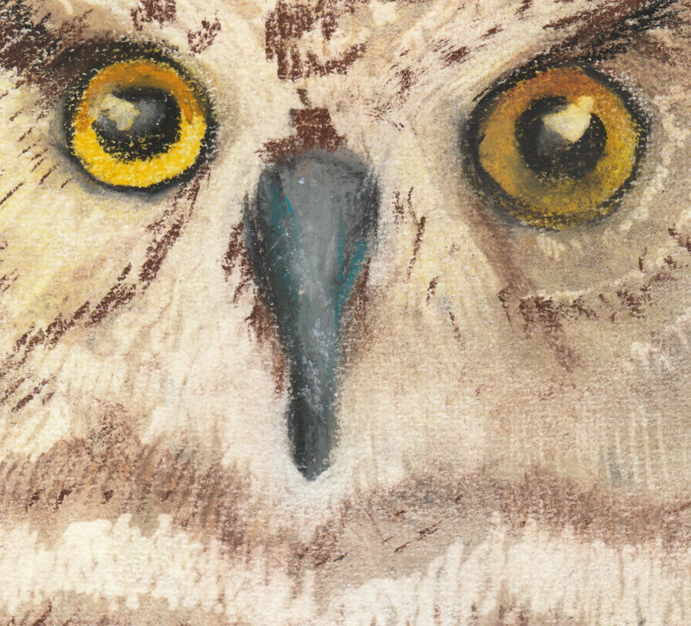
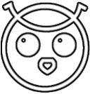

Über mich
Als ich gerade dabei war meinen Doktor in Neurobiologie zu machen, entschied ich, dass es Zeit für eine Veränderung ist. Irgendwie fasziniert mich die Grundidee des Internets: Ideen und Informationen mit Menschen aus der ganzen Welt zu teilen.
Das gepaart mit meiner endlosen Neugierde, ließ mich den Entschluss fassen, dieser ganzen Selbstständigkeits-Content-Creator-Sache eine Chance zu geben. Falls Du mich dabei begleiten möchtest, findest du rechts den Link zu meinen soziale Medien Kanälen.

Momentan arbeite ich daran:
- meine eigene Website zu erstellen
- auf den sozialen Medien present zu sein
- meine Kunstfertigkeiten zu verbessern
- herauszufinden, wie ich Papier recyclen und wiederverwerten kann



Impressum
Datenschutzerklärung